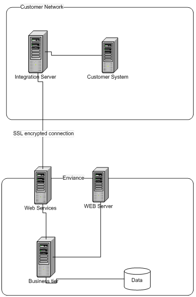

Integration with EMS can be accomplished at varying levels of customization, as needed.
Low: In this scenario, the customer uses the standard EIFL Connector package, with supported file types and column structure. Existing web services are used.
Medium: In this scenario, the customer works with EMS to leverage existing EIFL Connector capabilities but requires custom input file formats, such as non-standard file types, transformation of columns, rows or generating tags. Existing web services are used.
High: In this scenario, the customer requires custom enhancements such as:
If you are already using Web Services to integrate with other systems, you can request a technical description of the EMS Web Services APIs. If you are not already sending Web Service data to other locations, EMS strongly recommends you use EIFL Connector.
Web Services Flow Chart
